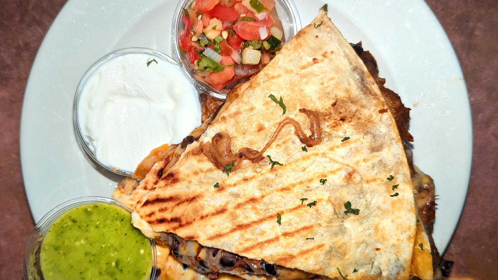

Zurück zur Übersicht
Cheesy Quesadillas mit Rinderhack und Bohnensalat
Weizentortillas mit würzigem Rinderhack, schwarzen Bohnen und geschmolzenem Gouda aus der Pfanne, dazu ein schneller Bohnensalat mit Limette und Joghurt.
- Zeit
- 30 Min.
- Schwierigkeit
- leicht
- Kategorie
- Pfanne
- Ernährung
- fleisch
Zutaten
Portionen
- 160 gWeizentortillas (4 kleine)
- 390 gschwarze Bohnen (Dose)
- 35 gTomatenmark
- 1rote Zwiebel
- 4 gscharfe Gewürzmischung (z. B. Piri-Piri)
- 50 gjunger Gouda, gerieben
- 1Limette
- 75 gNaturjoghurt
- 200 gRinderhackfleisch
- 1Tomate
- 1 ELOlivenöl
- 1 ELÖl
- 50 mlWasser
- Salz, Pfeffer, Zucker
Zubereitung
- Die Zwiebel halbieren, drei Viertel in feine Streifen schneiden und den Rest fein würfeln. Die Limette vierteln. Die Tomate fein würfeln. Die Bohnen in einem Sieb abgießen und mit Wasser abspülen.
- Für den Bohnensalat in einer großen Schüssel die Hälfte der Bohnen, Zwiebel- und Tomatenwürfel, den Saft von einem Limettenviertel, Olivenöl, Salz, Pfeffer und eine Prise Zucker vermengen.
- In einer großen Pfanne das Hackfleisch ohne Fett 2 Minuten scharf anbraten. Die restlichen Bohnen und die Zwiebelstreifen dazugeben und weitere 2–3 Minuten anbraten. Tomatenmark und Gewürzmischung dazugeben und 30 Sekunden mit anschwitzen. Mit dem Wasser ablöschen, kurz einköcheln lassen und mit Salz und Pfeffer abschmecken. Aus der Pfanne nehmen und beiseitestellen.
- Die Pfanne auswischen und das Öl darin bei mittlerer Hitze erhitzen. Einen Tortillafladen hineinlegen und mit der Hälfte vom Käse bestreuen. Wenn der Käse zu schmelzen beginnt, die Hälfte der Füllung darauf verteilen und einen zweiten Fladen darauflegen.
- Die Quesadilla einmal vorsichtig zusammendrücken, wenden und 1–2 Minuten weiterbraten. Aus der Pfanne nehmen und auf einen Teller legen. Mit den restlichen Fladen genauso verfahren. Die fertigen Quesadillas vierteln.
- Die Quesadillas auf Teller verteilen, mit Bohnensalat und Joghurt toppen und mit den restlichen Limettenspalten servieren.
Tipp: Unter einem sauberen Handtuch bleiben die fertigen Quesadillas warm, während die nächste in der Pfanne ist.